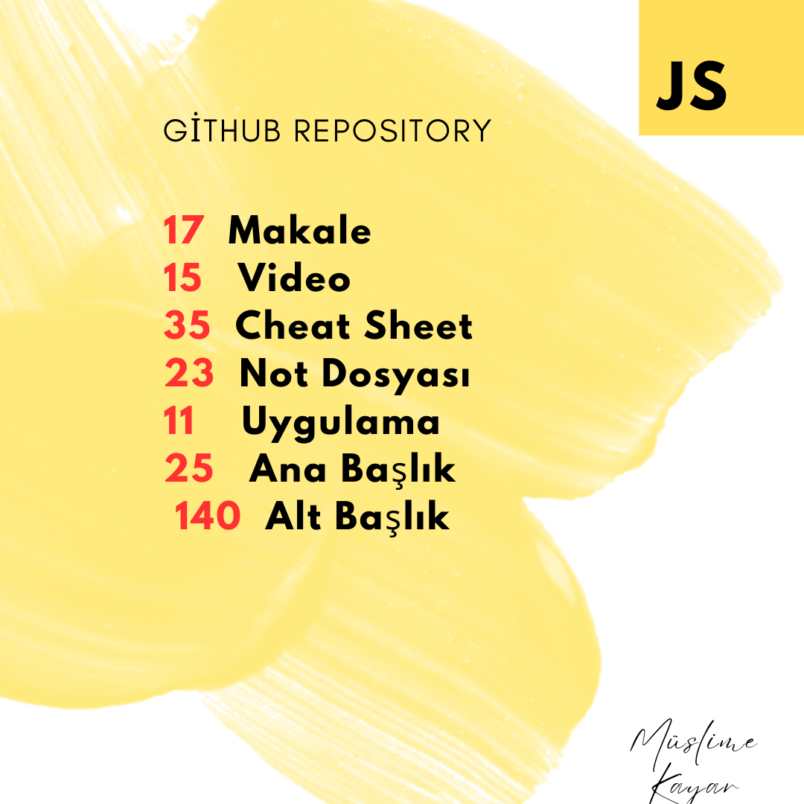

Diving Into JS World
Müslime KayarDiving into the JS World is an exciting adventure that takes you on a journey to create dynamic and interactive applications in your web development path. JavaScript, the essential language of modern web browsers, offers a wide range of functionality from simple DOM manipulations to complex single-page applications. Thanks to its flexibility and extensive ecosystem, it allows you to produce powerful solutions in both frontend and backend development when used with popular frameworks like React, Node.js, and Express.
GitHub Codes in 17 Articles
GitHub Codes in 17 Articles represents a comprehensive journey through version control mastery, guiding developers from basic repository initialization to advanced collaborative workflows that power modern software development. Each article systematically builds upon the previous knowledge, offering practical commands, best practices, and real-world scenarios that transform beginners into confident Git practitioners. The collection demystifies complex concepts like branching strategies, merge conflict resolution, and continuous integration, making them accessible through step-by-step tutorials and visual explanations. This structured approach ensures developers not only memorize commands but truly understand the underlying principles of distributed version control that have made GitHub the cornerstone of collaborative coding in today's development landscape.